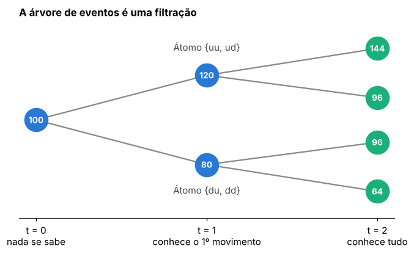
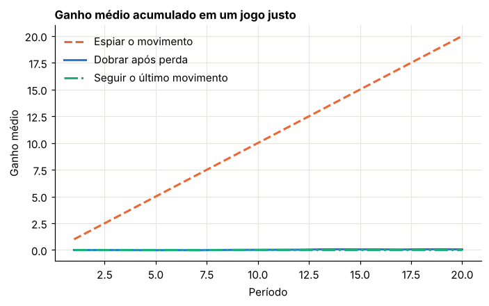
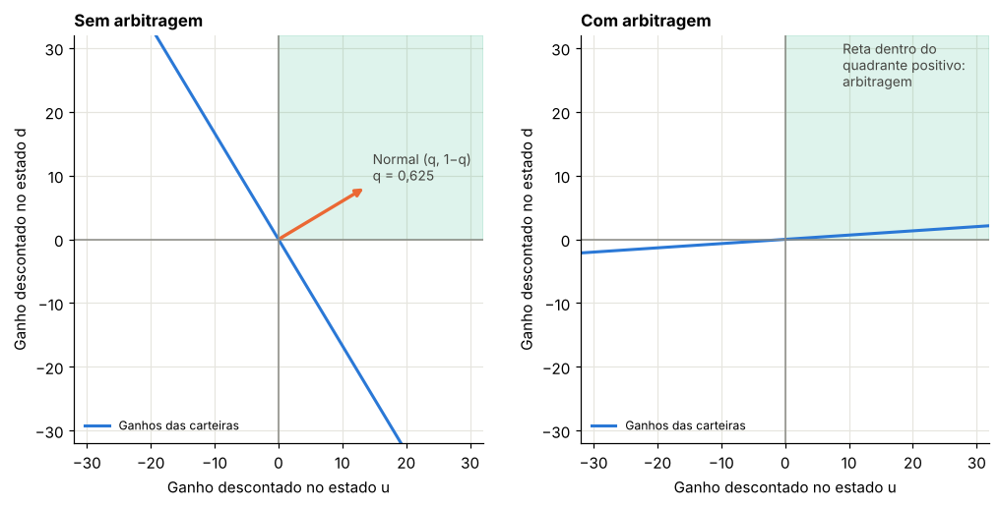
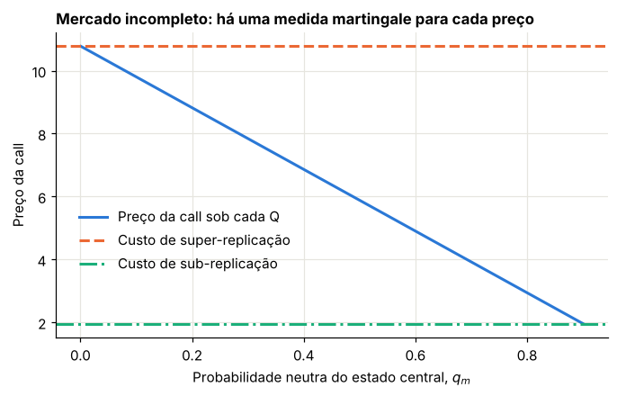

Módulo 3 — Neutralidade ao risco em tempo discreto#
Curso: Derivativos com Python, a partir de Derivatives Analytics with Python (Y. Hilpisch, Wiley, 2015). Este módulo cobre: seções 4.1 a 4.4 e 4.7 do livro. A parte de tempo contínuo fica para o Módulo 4.
O que você vai conseguir fazer ao final#
Modelar incerteza e informação com objetos concretos: estados, eventos, álgebras e filtrações.
Calcular esperanças condicionais e testar se um processo é martingale.
Mudar de medida de probabilidade com a derivada de Radon-Nikodym.
Escrever carteiras, estratégias autofinanciadas e processos de ganho.
Enunciar e entender a demonstração do Teorema Fundamental, na versão de um período.
Precificar qualquer derivativo atingível e obter sua carteira replicante, inclusive com juros aleatórios.
Reconhecer um mercado incompleto e calcular o intervalo de preços sem arbitragem.
Por que um módulo inteiro em mundo finito#
Com um número finito de cenários, toda a teoria vira soma e álgebra linear. Cada definição pode ser verificada no computador, célula a célula. A intuição obtida aqui é a que levamos para o tempo contínuo, no próximo módulo, em que a matemática é bem mais pesada.
No Módulo 1 vimos a ideia em dois cenários: o preço vem do custo de replicação e existe uma probabilidade \(q\) que o resume. Agora transformamos essa observação em teoria.
0. Preparação#
from itertools import combinations, product
import numpy as np
import pandas as pd
import matplotlib.pyplot as plt
from scipy.optimize import linprog
from IPython.display import display
AZUL, LARANJA, VERDE, CINZA = "#2a78d6", "#eb6834", "#1baf7a", "#8a8a84"
plt.rcParams.update({
"figure.figsize": (7.2, 4.0), "figure.dpi": 110,
"axes.spines.top": False, "axes.spines.right": False,
"axes.grid": True, "grid.color": "#e6e5df", "grid.linewidth": 0.8,
"axes.axisbelow": True, "axes.titlesize": 11, "axes.titleweight": "bold",
"axes.titlelocation": "left", "lines.linewidth": 2.0, "legend.frameon": False,
"font.size": 10,
})
def f3(x):
"""Formata com três casas decimais no padrão brasileiro."""
return f"{x:,.3f}".replace(",", "§").replace(".", ",").replace("§", ".")
def tabela(df):
"""Exibe um DataFrame com os números reais em três casas decimais."""
def fmt(v):
if isinstance(v, (float, np.floating)):
return "n/d" if np.isnan(v) else f3(v)
return v
display(df.map(fmt))
_checks = {"n": 0}
def ok(condicao, mensagem):
"""Verificação do laboratório: interrompe o notebook se a conta não fechar."""
assert bool(condicao), f"FALHOU: {mensagem}"
_checks["n"] += 1
print(f"OK — {mensagem}")
print("Ambiente pronto.")
Ambiente pronto.
1. Incerteza: estados, eventos e probabilidade#
Livro: §4.2, definições 1 a 4
1.1 O ponto de partida: os estados#
Fixamos um horizonte com datas \(t = 0, 1, \dots, T\). Hoje não sabemos como o mundo estará em \(T\), mas conhecemos a lista de possibilidades. Essa lista é o espaço de estados \(\Omega\), e cada elemento \(\omega\) é uma história completa.
Nossa economia-exemplo tem dois períodos, em cada um dos quais o índice sobe (u) ou desce (d):
1.2 Eventos e álgebras#
Um evento é um subconjunto de \(\Omega\): por exemplo, “subiu no primeiro período” é \(\{uu, ud\}\).
Nem todo evento precisa ser observável. Uma álgebra \(\mathcal{F}\) é uma família de eventos que representa o que é observável. Ela precisa satisfazer três condições de bom senso:
\(\Omega \in \mathcal{F}\): sempre sei que algo aconteceu.
Se \(E \in \mathcal{F}\), então \(E^c \in \mathcal{F}\): se consigo verificar que \(E\) ocorreu, sei também quando não ocorreu.
Uniões finitas de eventos de \(\mathcal{F}\) estão em \(\mathcal{F}\).
Toda álgebra num \(\Omega\) finito vem de uma partição. Basta pegar os menores eventos não vazios da álgebra, chamados átomos: eles dividem \(\Omega\) sem sobreposição, e a álgebra é formada por todas as uniões possíveis deles. Por isso, no computador, representamos a informação pela partição.
Com \(m\) átomos, cada um pode entrar ou não na união: são \(2^m\) eventos.
1.3 Probabilidade e esperança#
Uma medida de probabilidade atribui um número em \([0,1]\) a cada evento, de forma aditiva para eventos disjuntos e com \(P(\Omega) = 1\). Num mundo finito, basta dar \(P(\omega)\) em cada estado.
Duas medidas são equivalentes se concordam sobre o que é impossível: \(P(E) = 0 \Leftrightarrow Q(E) = 0\). Elas podem discordar completamente das chances, mas não sobre o que pode ou não acontecer.
Uma variável aleatória é uma função de \(\Omega\) nos números reais, e sua esperança é
Laboratório 1.1 — Álgebras no computador#
OMEGA = ["uu", "ud", "du", "dd"]
def algebra(particao):
"""Álgebra gerada por uma partição: todas as uniões possíveis de átomos."""
atomos = [frozenset(a) for a in particao]
saida = set()
for k in range(len(atomos) + 1):
for comb in combinations(atomos, k):
saida.add(frozenset().union(*comb))
return saida
def eh_algebra(F, omega):
"""Confere as três condições da definição de álgebra."""
tudo = frozenset(omega)
if tudo not in F:
return False
if any(tudo - E not in F for E in F):
return False
return all(A | B in F for A in F for B in F)
F0 = [["uu", "ud", "du", "dd"]]
F1 = [["uu", "ud"], ["du", "dd"]]
F2 = [["uu"], ["ud"], ["du"], ["dd"]]
linhas = []
for nome, p in [("F0: nada se sabe", F0), ("F1: conhece o 1º movimento", F1), ("F2: conhece tudo", F2)]:
A = algebra(p)
linhas.append({"Informação": nome, "Átomos": len(p), "Eventos na álgebra": len(A), "É álgebra?": eh_algebra(A, OMEGA)})
tabela(pd.DataFrame(linhas))
ok(all(l["É álgebra?"] and l["Eventos na álgebra"] == 2 ** l["Átomos"] for l in linhas), "cada partição gera uma álgebra com 2^m eventos")
falsa = {frozenset(), frozenset(OMEGA), frozenset({"uu"})}
ok(not eh_algebra(falsa, OMEGA), "uma família sem o complemento de {uu} não é álgebra")
| Informação | Átomos | Eventos na álgebra | É álgebra? | |
|---|---|---|---|---|
| 0 | F0: nada se sabe | 1 | 2 | True |
| 1 | F1: conhece o 1º movimento | 2 | 4 | True |
| 2 | F2: conhece tudo | 4 | 16 | True |
OK — cada partição gera uma álgebra com 2^m eventos
OK — uma família sem o complemento de {uu} não é álgebra
2. Informação ao longo do tempo#
Livro: §4.2, definições 5 a 9
2.1 Filtração#
A incerteza não se resolve de uma só vez. Uma filtração é uma sequência crescente de álgebras,
em que \(\mathcal{F}_t\) representa o que se sabe na data \(t\). Crescente significa que ninguém esquece. Em geral, \(\mathcal{F}_0 = \{\emptyset, \Omega\}\) (nada se sabe) e \(\mathcal{F}_T\) contém todos os eventos (tudo se sabe).
Em linguagem de partições: de uma data para a outra, os átomos se dividem.
2.2 Mensurabilidade e adaptação#
Dizer que \(X\) é \(\mathcal{F}_t\)-mensurável significa que \(X\) é conhecida na data \(t\). Na partição, a condição é concreta: \(X\) é constante em cada átomo de \(\mathcal{F}_t\).
Um processo \((S_t)\) é adaptado se \(S_t\) é \(\mathcal{F}_t\)-mensurável para todo \(t\): o preço de hoje é conhecido hoje.
2.3 Tempo de parada#
Um tempo de parada é uma data aleatória \(\tau\) em que a decisão de parar usa apenas informação disponível até aquele momento:
“Vender na primeira vez que o índice cair” é um tempo de parada. “Vender no dia do máximo” não é, porque só se sabe qual foi o máximo depois. Esse conceito será central para as opções americanas no Módulo 9.
Laboratório 2.1 — A economia-exemplo#
Tomamos \(S_0 = 100\), com alta de 20% ou queda de 20% por período, e juros de 5% por período. As probabilidades reais são \(p = 70\%\) de alta, independentes.
def particoes(T):
"""Partições da filtração natural de uma árvore binária de T períodos."""
omega = ["".join(c) for c in product("ud", repeat=T)]
saida = []
for t in range(T + 1):
grupos = {}
for w in omega:
grupos.setdefault(w[:t], []).append(w)
saida.append(list(grupos.values()))
return omega, saida
def arvore(T, S0, u, d):
"""Preços por trajetória: linhas são estados e colunas são datas."""
omega, _ = particoes(T)
S = pd.DataFrame(index=omega, columns=range(T + 1), dtype=float)
for w in omega:
v = S0
S.loc[w, 0] = v
for t, c in enumerate(w, start=1):
v *= u if c == "u" else d
S.loc[w, t] = v
return S
def medida(omega, p):
return pd.Series({w: np.prod([p if c == "u" else 1 - p for c in w]) for w in omega})
def mensuravel(X, particao):
return all(np.ptp(X.loc[a].values) < 1e-12 for a in particao)
T, S0, u, d, r, p = 2, 100.0, 1.2, 0.8, 0.05, 0.7
omega, filtracao = particoes(T)
S = arvore(T, S0, u, d)
P = medida(omega, p)
tabela(S.reset_index(names="Estado"))
fig, ax = plt.subplots(figsize=(7.2, 3.8))
nos = {"": (0, 0), "u": (1, 1), "d": (1, -1), "uu": (2, 1.6), "ud": (2, 0.5), "du": (2, -0.5), "dd": (2, -1.6)}
for pai, (x0, y0) in nos.items():
for m in "ud":
filho = pai + m
if filho in nos:
ax.plot([x0, nos[filho][0]], [y0, nos[filho][1]], color=CINZA, lw=1.5, zorder=1)
for no, (x, y) in nos.items():
t = len(no)
w = (no + "uu")[:T]
ax.scatter([x], [y], s=620, color=AZUL if t < 2 else VERDE, zorder=2)
ax.text(x, y, f"{S.loc[w, t]:.0f}", ha="center", va="center", color="white", fontweight="bold", fontsize=9, zorder=3)
ax.text(1, 1.55, "Átomo {uu, ud}", ha="center", color="#444440")
ax.text(1, -1.65, "Átomo {du, dd}", ha="center", color="#444440")
ax.set_xticks([0, 1, 2])
ax.set_xticklabels(["t = 0\nnada se sabe", "t = 1\nconhece o 1º movimento", "t = 2\nconhece tudo"])
ax.set_yticks([])
ax.grid(False)
ax.spines["left"].set_visible(False)
ax.set_ylim(-2.2, 2.2)
ax.set_title("A árvore de eventos é uma filtração")
plt.show()
ok(mensuravel(S[1], filtracao[1]) and mensuravel(S[2], filtracao[2]), "o preço é adaptado à filtração")
ok(not mensuravel(S[2], filtracao[1]), "o preço de t = 2 não é conhecido em t = 1")
| Estado | 0 | 1 | 2 | |
|---|---|---|---|---|
| 0 | uu | 100,000 | 120,000 | 144,000 |
| 1 | ud | 100,000 | 120,000 | 96,000 |
| 2 | du | 100,000 | 80,000 | 96,000 |
| 3 | dd | 100,000 | 80,000 | 64,000 |

OK — o preço é adaptado à filtração
OK — o preço de t = 2 não é conhecido em t = 1
Laboratório 2.2 — O preço de hoje não basta como informação#
Em nossa árvore, \(S_2(ud) = S_2(du) = 96\). Se alguém só observar \(S_2\), não saberá qual caminho ocorreu: a álgebra gerada por \(S_2\) tem 3 átomos, e não 4. Já observando todo o histórico \((S_1, S_2)\), todos os estados se separam.
É por isso que produtos dependentes da trajetória exigem controlar o caminho, e não só o preço final.
def particao_gerada(serie):
"""Partição da álgebra gerada por uma variável (ou tupla de variáveis)."""
grupos = {}
for w, v in serie.items():
grupos.setdefault(v if isinstance(v, tuple) else round(float(v), 9), []).append(w)
return list(grupos.values())
so_final = particao_gerada(S[2])
historico = pd.Series({w: (round(S.loc[w, 1], 9), round(S.loc[w, 2], 9)) for w in omega})
com_historico = particao_gerada(historico)
print("Só o preço final:", so_final)
print("Todo o histórico:", com_historico)
ok(len(so_final) == 3 and len(com_historico) == 4, "o histórico contém mais informação do que o preço final")
def eh_tempo_de_parada(tau, filt):
"""Testa se {tau <= t} é união de átomos de F_t para todo t."""
for t, part in enumerate(filt):
evento = set(tau.index[tau <= t])
for a in part:
if not (set(a) <= evento or not (set(a) & evento)):
return False
return True
primeira_queda = pd.Series({w: (w.index("d") + 1 if "d" in w else T) for w in omega})
dia_do_maximo = pd.Series({w: int(np.argmax(S.loc[w].values)) for w in omega})
tabela(pd.DataFrame({"Primeira queda": primeira_queda, "Dia do máximo": dia_do_maximo}).reset_index(names="Estado"))
ok(eh_tempo_de_parada(primeira_queda, filtracao), "'primeira queda' é um tempo de parada")
ok(not eh_tempo_de_parada(dia_do_maximo, filtracao), "'dia do máximo' exige olhar o futuro: não é tempo de parada")
Só o preço final: [['uu'], ['ud', 'du'], ['dd']]
Todo o histórico: [['uu'], ['ud'], ['du'], ['dd']]
OK — o histórico contém mais informação do que o preço final
| Estado | Primeira queda | Dia do máximo | |
|---|---|---|---|
| 0 | uu | 2 | 2 |
| 1 | ud | 2 | 1 |
| 2 | du | 1 | 0 |
| 3 | dd | 1 | 0 |
OK — 'primeira queda' é um tempo de parada
OK — 'dia do máximo' exige olhar o futuro: não é tempo de parada
3. Esperança condicional e martingales#
Livro: §4.2, definições 10 e 11
3.1 Esperança condicional, passo a passo#
Na data \(t\) já sabemos em que átomo estamos, e a melhor previsão usa apenas os estados daquele átomo, com as probabilidades reponderadas. Para cada átomo \(A\) de \(\mathcal{F}_t\):
Note que a esperança condicional é, ela própria, uma variável aleatória: uma média diferente para cada átomo.
A definição formal do livro exige duas propriedades:
\(\mathbb{E}^P_t[X]\) é \(\mathcal{F}_t\)-mensurável (só depende do que se sabe em \(t\));
para todo evento \(E \in \mathcal{F}_t\): \(\ \mathbb{E}^P\big[\mathbb{E}^P_t[X]\,\mathbf{1}_E\big] = \mathbb{E}^P[X\,\mathbf{1}_E]\) (o valor médio em cada evento conhecido é preservado).
Dessas decorre a lei das esperanças iteradas: para \(s \le t\), \(\mathbb{E}_s\big[\mathbb{E}_t[X]\big] = \mathbb{E}_s[X]\). Em palavras: minha previsão de hoje sobre minha previsão de amanhã é a minha previsão de hoje.
3.2 Martingale#
Um processo adaptado é um martingale sob \(Q\) se
É o modelo matemático do jogo justo: a melhor previsão para qualquer data futura é o valor atual.
Basta verificar um passo. Se \(\mathbb{E}_t[S_{t+1}] = S_t\) para todo \(t\), a lei das esperanças iteradas dá \(\mathbb{E}_t[S_{t+2}] = \mathbb{E}_t\big[\mathbb{E}_{t+1}[S_{t+2}]\big] = \mathbb{E}_t[S_{t+1}] = S_t\), e assim por diante.
Laboratório 3.1 — Conferindo definições#
Testamos o preço descontado \(\tilde S_t = S_t/(1+r)^t\) sob duas medidas: a real (\(p = 70\%\)) e aquela em que \(q\) é escolhido para zerar o ganho esperado do preço descontado:
def E_cond(X, particao, prob):
"""Esperança condicional de X dada a informação da partição, sob a medida prob."""
Y = pd.Series(index=X.index, dtype=float)
for a in particao:
Y.loc[a] = float((X.loc[a] * prob.loc[a]).sum() / prob.loc[a].sum())
return Y
def eh_martingale(X, filt, prob):
"""X é DataFrame com colunas t. Testa o passo de um período em todas as datas."""
return all(np.allclose(E_cond(X[t + 1], filt[t], prob), X[t]) for t in range(len(filt) - 1))
B = pd.DataFrame({t: (1 + r) ** t for t in range(T + 1)}, index=omega)
S_desc = S / B
q = (1 + r - d) / (u - d)
Q = medida(omega, q)
print("q =", f3(q), "| p =", f3(p))
X = S[2]
EX = E_cond(X, filtracao[1], P)
ok(mensuravel(EX, filtracao[1]), "propriedade 1: a esperança condicional é mensurável em F_1")
ok(all(abs(float((EX[list(E)] * P[list(E)]).sum()) - float((X[list(E)] * P[list(E)]).sum())) < 1e-10 for E in algebra(filtracao[1]) if E), "propriedade 2: as médias são preservadas em todo evento de F_1")
ok(abs(float((EX * P).sum()) - float((X * P).sum())) < 1e-10, "lei das esperanças iteradas")
ok(eh_martingale(S_desc, filtracao, Q), "o preço descontado é martingale sob Q")
ok(not eh_martingale(S_desc, filtracao, P), "o preço descontado não é martingale sob P")
q = 0,625 | p = 0,700
OK — propriedade 1: a esperança condicional é mensurável em F_1
OK — propriedade 2: as médias são preservadas em todo evento de F_1
OK — lei das esperanças iteradas
OK — o preço descontado é martingale sob Q
OK — o preço descontado não é martingale sob P
3.3 Trocando de medida: a derivada de Radon-Nikodym#
Se \(Q\) é equivalente a \(P\), definimos, estado a estado,
Uma esperança sob \(Q\) pode, então, ser calculada sob \(P\). Basta multiplicar e dividir por \(P(\omega)\):
Duas consequências que o livro não desenvolve, mas que usaremos no próximo módulo para o teorema de Girsanov:
Processo de densidade. \(L_t = \mathbb{E}^P_t[L]\) é um martingale sob \(P\), com \(L_0 = 1\).
Fórmula de Bayes. Para esperanças condicionais, não basta multiplicar por \(L\); é preciso normalizar:
Para ver o porquê, fixe um átomo \(A\) de \(\mathcal{F}_t\). Do lado esquerdo, a definição dá \(\sum_A Q X / Q(A)\). Do lado direito, o numerador é \(\sum_A P L X / P(A) = \sum_A Q X / P(A)\), e o denominador é \(L_t = Q(A)/P(A)\). Dividindo, \(P(A)\) se cancela e os dois lados coincidem.
L = Q / P
Lt = pd.DataFrame({t: E_cond(L, filtracao[t], P) for t in range(T + 1)})
tabela(pd.DataFrame({"P": P, "Q": Q, "L = Q/P": L}).reset_index(names="Estado"))
ok(abs(float((Q * S[2]).sum()) - float((P * L * S[2]).sum())) < 1e-10, "E^Q[X] = E^P[L X]")
ok(eh_martingale(Lt, filtracao, P) and abs(float(Lt[0].iloc[0]) - 1) < 1e-12, "L_t é martingale sob P e começa em 1")
bayes = E_cond(L * S[2], filtracao[1], P) / Lt[1]
ok(np.allclose(bayes, E_cond(S[2], filtracao[1], Q)), "fórmula de Bayes para esperança condicional")
| Estado | P | Q | L = Q/P | |
|---|---|---|---|---|
| 0 | uu | 0,490 | 0,391 | 0,797 |
| 1 | ud | 0,210 | 0,234 | 1,116 |
| 2 | du | 0,210 | 0,234 | 1,116 |
| 3 | dd | 0,090 | 0,141 | 1,562 |
OK — E^Q[X] = E^P[L X]
OK — L_t é martingale sob P e começa em 1
OK — fórmula de Bayes para esperança condicional
4. O mercado: carteiras e estratégias#
Livro: §4.3
4.1 Ativos#
O mercado tem \(K+1\) ativos. O ativo 0 é o título (bond), com \(S^0_0 = 1\), que serve de numerário. Ele é sem risco no sentido de que \(S^0_t\) é conhecido já em \(t-1\). O fator de desconto é \(\beta_t = 1/S^0_t\).
Isso inclui juros aleatórios: o juro do próximo período é desconhecido hoje, mas é conhecido no início do período. Veremos um exemplo na Seção 8.
4.2 Estratégia de negociação#
Uma estratégia é um processo \(\phi_t = (\phi^0_t, \dots, \phi^K_t)\) com a quantidade de cada ativo no período \((t-1, t]\). Ela precisa ser previsível: \(\phi_t\) é \(\mathcal{F}_{t-1}\)-mensurável, ou seja, a carteira do período é escolhida antes de se conhecer o movimento do período.
O valor da estratégia é \(V_t = \phi_t \cdot S_t\) e o ganho acumulado é
4.3 Autofinanciamento#
Na data \(t\), a carteira velha vale \(\phi_t\cdot S_t\). Ao montar a nova, sem entrada nem saída de recursos, a condição é
Isso equivale a \(V_t = V_0 + G_t\): a riqueza só muda por ganhos de mercado.
4.4 O lema que sustenta toda a teoria#
Vamos descontar, com \(\tilde S_t = \beta_t S_t\) e \(\tilde V_t = \beta_t V_t\). Multiplicando a condição de autofinanciamento por \(\beta_t\), ela continua válida em termos descontados: \(\phi_t\cdot\tilde S_t = \phi_{t+1}\cdot\tilde S_t\). Usando isso na variação de um período:
Somando no tempo:
Agora suponha que \(\tilde S\) é martingale sob \(Q\). Como \(\phi_t\) é previsível, sai da esperança condicional:
Conclusão: o valor descontado de qualquer estratégia autofinanciada previsível também é martingale sob \(Q\). Uma aposta justa, com quantidade escolhida de antemão, continua justa, seja qual for a regra.
Errata do livro: na prova da Proposição 1 (§4.7.2), a soma aparece com o termo \(\phi_t\cdot(\beta_t S_t - \beta_{t+1}S_{t+1})\), para \(t = 2, \dots, T\). O índice correto é o da expressão acima: \(\phi_t\cdot(\beta_t S_t - \beta_{t-1}S_{t-1})\). Da forma impressa, a soma usaria \(S_{T+1}\), que não existe.
Laboratório 4.1 — Não dá para vencer um jogo justo, a menos que se olhe o futuro#
Simulamos um martingale simples, com passos de \(\pm 1\) e chances iguais, em 20 períodos. Comparamos estratégias previsíveis com uma que “espia” o movimento do período.
rng = np.random.default_rng(403)
periodos, cenarios = 20, 400_000
dX = rng.choice([-1.0, 1.0], size=(cenarios, periodos))
def ganhos(fi):
return np.cumsum(fi * dX, axis=1)
constante = np.ones_like(dX)
momento = np.hstack([np.ones((cenarios, 1)), np.sign(dX[:, :-1])])
reversao = -momento
dobrar = np.ones_like(dX)
for t in range(1, periodos):
perdeu = dX[:, t - 1] < 0
dobrar[:, t] = np.where(perdeu, np.minimum(dobrar[:, t - 1] * 2, 64.0), 1.0)
espiando = np.sign(dX)
estrategias = {
"Comprar e manter": constante,
"Seguir o último movimento": momento,
"Apostar contra o último movimento": reversao,
"Dobrar após perda (limite 64)": dobrar,
"Espiar o movimento do período": espiando,
}
linhas, curvas = [], {}
for nome, fi in estrategias.items():
g = ganhos(fi)
curvas[nome] = g.mean(axis=0)
gf = g[:, -1]
linhas.append({"Estratégia": nome, "Previsível?": nome != "Espiar o movimento do período", "Ganho médio final": gf.mean(), "Erro-padrão": gf.std(ddof=1) / np.sqrt(cenarios)})
res = pd.DataFrame(linhas)
tabela(res)
fig, ax = plt.subplots()
ax.plot(range(1, periodos + 1), curvas["Espiar o movimento do período"], color=LARANJA, ls="--", label="Espiar o movimento")
ax.plot(range(1, periodos + 1), curvas["Dobrar após perda (limite 64)"], color=AZUL, label="Dobrar após perda")
ax.plot(range(1, periodos + 1), curvas["Seguir o último movimento"], color=VERDE, ls="-.", label="Seguir o último movimento")
ax.set_title("Ganho médio acumulado em um jogo justo")
ax.set_xlabel("Período")
ax.set_ylabel("Ganho médio")
ax.legend()
plt.show()
prev = res[res["Previsível?"]]
ok((prev["Ganho médio final"].abs() < 4 * prev["Erro-padrão"]).all(), "nenhuma regra previsível altera o ganho médio de um jogo justo")
ok(res.loc[~res["Previsível?"], "Ganho médio final"].iloc[0] > 19.9, "sem previsibilidade, o jogo deixa de ser justo")
| Estratégia | Previsível? | Ganho médio final | Erro-padrão | |
|---|---|---|---|---|
| 0 | Comprar e manter | True | -0,007 | 0,007 |
| 1 | Seguir o último movimento | True | 0,001 | 0,007 |
| 2 | Apostar contra o último movimento | True | -0,001 | 0,007 |
| 3 | Dobrar após perda (limite 64) | True | 0,055 | 0,059 |
| 4 | Espiar o movimento do período | False | 20,000 | 0,000 |

OK — nenhuma regra previsível altera o ganho médio de um jogo justo
OK — sem previsibilidade, o jogo deixa de ser justo
Observação. A estratégia de dobrar a aposta aparenta ganhar quase sempre, mas com limite de exposição o ganho médio é zero: os muitos ganhos pequenos são exatamente compensados por raras perdas grandes. Sem limite, surgem problemas em tempo contínuo, e a noção de estratégia admissível no Módulo 4 serve para excluí-los.
5. Arbitragem#
Livro: §4.4, definições 21 a 26
5.1 Direitos contingentes#
Um direito contingente é um pagamento \(A_T(\omega) \ge 0\) em \(T\), que depende do estado. Opções são exemplos. O direito é atingível se existe uma estratégia autofinanciada com \(V_T = A_T\): esse direito é redundante e o preço dele deve ser \(V_0\).
5.2 O que é arbitragem#
Arbitragem é um almoço grátis: uma estratégia autofinanciada com
Não custa nada, nunca dá prejuízo e tem chance de lucro. Note que as probabilidades reais só importam para dizer o que é possível: basta que \(P(\omega) > 0\).
Errata do livro, que afeta o entendimento. O livro define estratégia admissível (Def. 19) como aquela com valor limitado inferiormente, \(V_t \ge -\alpha\), e arbitragem (Def. 25) como estratégia admissível com \(V_0 = 0\) e \(\mathbb{E}[V_T] > 0\). Num mundo finito, toda estratégia é limitada inferiormente. Pela letra do livro, comprar o índice com dinheiro emprestado seria arbitragem sempre que o retorno esperado superasse a taxa de juros, o que contradiz o próprio Teorema 1. No artigo original de Harrison e Pliska, admissível significa \(V_t \ge 0\), e é isso que faz a definição funcionar. A prova do Lema 1, no livro, já parte de \(V_t \ge 0\).
Laboratório 5.1 — A definição do livro, ao pé da letra#
Em nossa economia, sabemos que existe medida martingale. Portanto, não pode haver arbitragem. Mas vejamos a estratégia “comprar o índice com dinheiro emprestado”.
fi_S, fi_B = 1.0, -100.0
V0 = fi_S * S0 + fi_B * 1.0
VT = fi_S * S[2] + fi_B * B[2]
tabela(pd.DataFrame({"Valor final": VT, "Prob. real": P}).reset_index(names="Estado"))
print("Custo inicial:", f3(V0), "| Valor esperado final:", f3(float((VT * P).sum())), "| Pior caso:", f3(float(VT.min())))
ok(V0 == 0 and (VT * P).sum() > 0 and VT.min() > -np.inf, "satisfaz a Definição 25 como impressa")
ok(VT.min() < 0, "mas pode dar prejuízo: não é arbitragem")
ok(abs(float((VT / B[2] * Q).sum())) < 1e-10, "e sob Q seu valor esperado descontado é zero")
| Estado | Valor final | Prob. real | |
|---|---|---|---|
| 0 | uu | 33,750 | 0,490 |
| 1 | ud | -14,250 | 0,210 |
| 2 | du | -14,250 | 0,210 |
| 3 | dd | -46,250 | 0,090 |
Custo inicial: 0,000 | Valor esperado final: 6,390 | Pior caso: -46,250
OK — satisfaz a Definição 25 como impressa
OK — mas pode dar prejuízo: não é arbitragem
OK — e sob Q seu valor esperado descontado é zero
5.3 Arbitragem fraca: o Lema 1 com números#
Pode haver uma estratégia com \(V_0 = 0\) e \(V_T \ge 0\) que, no meio do caminho, passe por valor negativo. A definição de Harrison e Pliska exige \(V_t \ge 0\) em todas as datas, e o livro chama essa versão mais frouxa de arbitragem fraca. O Lema 1 diz que não há diferença essencial: de uma arbitragem fraca sempre se extrai uma arbitragem no sentido forte.
A ideia da prova. Olhe para o último instante em que o valor fica negativo, e o evento em que isso ocorre. Não faça nada até lá. Nesse instante e nesse evento, comece a estratégia, pois o déficit já não é mais carregado: o valor inicial passa a ser zero e o resultado final só melhora.
Exemplo com \(r = 0\). O índice começa em 100 e vai a 110 ou 90. Em \(d\), porém, os dois sucessores são 95 e 92, ambos acima de 90: há uma oportunidade naquele nó.
Errata menor: na prova do Lema 1, em “\(\psi_u(\omega) \equiv 0\) if \(u < t\) as well as \(\omega \notin E\)”, deveria ser \(u > t\).
est = ["uu", "ud", "du", "dd"]
S_lema = pd.DataFrame({0: 100.0, 1: [110.0, 110.0, 90.0, 90.0], 2: [120.0, 100.0, 95.0, 92.0]}, index=est)
# Estratégia fraca: comprar 1 unidade a crédito; em d, comprar mais 4; em u, zerar.
fi_S1 = pd.Series(1.0, index=est)
fi_B1 = pd.Series(-100.0, index=est)
fi_S2 = pd.Series({"uu": 0.0, "ud": 0.0, "du": 5.0, "dd": 5.0})
fi_B2 = fi_B1 + (fi_S1 - fi_S2) * S_lema[1]
V1 = fi_S1 * S_lema[1] + fi_B1
V2 = fi_S2 * S_lema[2] + fi_B2
# Estratégia corrigida: nada até t=1; em d, entra com a mesma posição, mais o déficit em caixa.
a = V1["dd"]
psi_S2 = pd.Series({"uu": 0.0, "ud": 0.0, "du": 5.0, "dd": 5.0})
psi_B2 = pd.Series({"uu": 0.0, "ud": 0.0, "du": fi_B2["du"] - a, "dd": fi_B2["dd"] - a})
W1 = pd.Series({"uu": 0.0, "ud": 0.0, "du": float(psi_S2["du"] * 90.0 + psi_B2["du"]), "dd": float(psi_S2["dd"] * 90.0 + psi_B2["dd"])})
W2 = psi_S2 * S_lema[2] + psi_B2
tabela(pd.DataFrame({"V1 fraca": V1, "V2 fraca": V2, "V1 corrigida": W1, "V2 corrigida": W2}).reset_index(names="Estado"))
ok(V1.min() < 0 and V2.min() >= 0 and V2.max() > 0, "a estratégia fraca passa por valor negativo, mas termina não negativa")
ok(W1.abs().max() < 1e-9 and W2.min() >= 0 and W2.max() > 0, "a estratégia corrigida é arbitragem em sentido forte")
| Estado | V1 fraca | V2 fraca | V1 corrigida | V2 corrigida | |
|---|---|---|---|---|---|
| 0 | uu | 10,000 | 10,000 | 0,000 | 0,000 |
| 1 | ud | 10,000 | 10,000 | 0,000 | 0,000 |
| 2 | du | -10,000 | 15,000 | 0,000 | 25,000 |
| 3 | dd | -10,000 | 0,000 | 0,000 | 10,000 |
OK — a estratégia fraca passa por valor negativo, mas termina não negativa
OK — a estratégia corrigida é arbitragem em sentido forte
6. O Teorema Fundamental#
Livro: §4.4, Teorema 1 e §4.7.3
Enunciado#
No modelo de mercado discreto, são equivalentes:
Não há oportunidades de arbitragem.
Existe uma medida \(Q\), equivalente a \(P\), sob a qual os preços descontados são martingales.
Existe um sistema de preços lineares consistente com o mercado.
A versão de um período, passo a passo#
Considere \(n\) ativos e \(m\) estados. O ativo \(j\) custa \(p_j\) hoje e paga \(D_{\omega j}\) no estado \(\omega\). A matriz \(D\) tem \(m\) linhas e \(n\) colunas. Uma carteira \(\theta\) custa \(p\cdot\theta\) e paga \(D\theta\).
Definição de preços de estado. Um vetor \(\psi \in \mathbb{R}^m\), com todos os componentes positivos, tal que
\(\psi_\omega\) é o preço hoje de receber 1 no estado \(\omega\) (título de Arrow-Debreu).
Parte fácil: preços de estado eliminam arbitragem. Se \(D\theta \ge 0\) e pelo menos um componente é positivo, e \(\psi\) é estritamente positivo, então
Ou seja, uma carteira com pagamento não negativo e não nulo tem custo positivo. Não há almoço grátis.
Parte difícil: sem arbitragem existem preços de estado. Aqui está a ideia geométrica.
Passo 1. Cada carteira gera o vetor \(\big(-p\cdot\theta,\ D\theta\big)\) em \(\mathbb{R}^{1+m}\): fluxo de caixa hoje e em cada estado. O conjunto desses vetores é um subespaço linear \(M\).
Passo 2. Arbitragem significa que \(M\) toca o octante positivo \(\mathbb{R}^{1+m}_+\) em algum ponto diferente da origem.
Passo 3. Sem arbitragem, \(M\) e o octante só se encontram na origem. Pelo teorema do hiperplano separador, existe um vetor \((\psi_0, \psi)\) estritamente positivo e ortogonal a \(M\).
Passo 4. Ortogonal a \(M\) significa, para todo \(\theta\):
Como vale para todo \(\theta\), temos \(\psi_0\,p = D^\top\psi\). Normalizando por \(\psi_0\), chegamos a \(p = D^\top\psi\).
De preços de estado a medida martingale#
Seja o título, que custa 1 e paga \(1+r\) em todos os estados. Aplicando \(p = D^\top\psi\):
Logo, a soma dos \(\psi_\omega\) é o fator de desconto. Defina
São números positivos que somam 1: uma probabilidade. Para qualquer ativo,
A probabilidade neutra ao risco é apenas o preço de estado normalizado. Essa é a relação da Proposição 1 do livro entre sistema de preços e medida martingale.
A geometria com dois estados#
Com um ativo arriscado e dois estados, o ganho descontado de uma carteira com \(\theta\) unidades é \(\theta\,(\Delta\tilde S_u, \Delta\tilde S_d)\): todas as carteiras formam uma reta pela origem.
Se a reta atravessa os quadrantes sem entrar no positivo, não há arbitragem, e a normal à reta dá \((q, 1-q)\).
Se a reta entra no quadrante positivo, há arbitragem, e nenhuma normal tem componentes positivos.
def painel(ax, Su, Sd, r, titulo):
du_, dd_ = Su / (1 + r) - 100, Sd / (1 + r) - 100
lim = 32
ax.axhspan(0, lim, xmin=0.5, xmax=1, color=VERDE, alpha=0.14)
esc = 2 * lim / max(abs(du_), abs(dd_))
ax.plot([-esc * du_, esc * du_], [-esc * dd_, esc * dd_], color=AZUL, label="Ganhos das carteiras")
ax.axhline(0, color=CINZA, lw=1)
ax.axvline(0, color=CINZA, lw=1)
if du_ * dd_ < 0:
q = -dd_ / (du_ - dd_)
ax.annotate("", xy=(22 * q, 22 * (1 - q)), xytext=(0, 0), arrowprops=dict(arrowstyle="-|>", color=LARANJA, lw=2.2))
ax.text(22 * q + 1, 22 * (1 - q) + 1, f"Normal (q, 1−q)\nq = {f3(q)}", color="#444440", fontsize=9)
else:
ax.text(9, 24, "Reta dentro do\nquadrante positivo:\narbitragem", color="#444440", fontsize=9)
ax.set_xlim(-lim, lim)
ax.set_ylim(-lim, lim)
ax.set_aspect("equal")
ax.set_title(titulo)
ax.set_xlabel("Ganho descontado no estado u")
ax.set_ylabel("Ganho descontado no estado d")
ax.legend(loc="lower left", fontsize=8)
fig, (a1, a2) = plt.subplots(1, 2, figsize=(9.5, 4.6))
painel(a1, 120.0, 80.0, 0.05, "Sem arbitragem")
painel(a2, 120.0, 106.0, 0.05, "Com arbitragem")
plt.tight_layout()
plt.show()

Laboratório 6.1 — Teste de força do teorema em mercados aleatórios#
Sorteamos centenas de mercados, com números aleatórios de ativos e estados, e para cada um respondemos duas perguntas de forma independente, por programação linear:
Existe arbitragem? Procuramos \(\theta\) limitado com \(D\theta \ge 0\), \(p\cdot\theta \le 0\) e benefício positivo.
Existem preços de estado positivos? Procuramos \(\psi\) com \(D^\top\psi = p\) e o maior piso \(\varepsilon\) possível.
O teorema diz que exatamente uma das respostas é sim, em todos os mercados.
def achar_arbitragem(D, p):
"""Maximiza o benefício de uma carteira limitada com Dθ >= 0 e p·θ <= 0."""
m, n = D.shape
A_ub = np.vstack([-D, p])
b_ub = np.zeros(m + 1)
c = -(D.sum(axis=0) - p)
res = linprog(c, A_ub=A_ub, b_ub=b_ub, bounds=[(-1, 1)] * n, method="highs")
return -res.fun, res.x
def achar_precos_estado(D, p):
"""Maximiza o piso ε de um vetor ψ com D'ψ = p."""
m, n = D.shape
c = np.zeros(m + 1)
c[-1] = -1.0
A_eq = np.hstack([D.T, np.zeros((n, 1))])
A_ub = np.hstack([-np.eye(m), np.ones((m, 1))])
res = linprog(c, A_ub=A_ub, b_ub=np.zeros(m), A_eq=A_eq, b_eq=p, bounds=[(None, None)] * m + [(None, 1.0)], method="highs")
if res.status != 0:
return -np.inf, None
return res.x[-1], res.x[:-1]
rng = np.random.default_rng(406)
tol = 1e-8
tot = {"sem arbitragem": 0, "com arbitragem": 0, "contradições": 0}
for i in range(800):
m, n = rng.integers(2, 7), rng.integers(1, 6)
D = rng.uniform(0.0, 3.0, (m, n))
if i % 2 == 0:
p = D.T @ rng.uniform(0.05, 1.0, m)
else:
p = rng.uniform(0.0, 3.0, n)
benef, _ = achar_arbitragem(D, p)
eps, _ = achar_precos_estado(D, p)
arb, psi = benef > tol, eps > tol
if arb == psi:
tot["contradições"] += 1
tot["com arbitragem" if arb else "sem arbitragem"] += 1
print(tot)
ok(tot["contradições"] == 0, "em todos os mercados sorteados, há arbitragem ou há preços de estado, nunca os dois")
ok(min(tot["com arbitragem"], tot["sem arbitragem"]) > 100, "o teste cobriu bem os dois casos")
{'sem arbitragem': 540, 'com arbitragem': 260, 'contradições': 0}
OK — em todos os mercados sorteados, há arbitragem ou há preços de estado, nunca os dois
OK — o teste cobriu bem os dois casos
7. Precificação e replicação em vários períodos#
Livro: §4.4, Corolário 1 e Proposição 2
7.1 A fórmula#
Se o mercado é livre de arbitragem e \(A_T\) é atingível por \(\phi\), o lema da Seção 4.4 dá: \(\tilde V\) é martingale sob qualquer \(Q\). Logo,
Três conclusões do Corolário 1:
O preço é único: todas as estratégias que geram \(A_T\) têm o mesmo custo.
O preço não depende de qual \(Q\) se escolhe, se o direito for atingível.
A probabilidade real não aparece.
7.2 De um período para vários: nó a nó#
Um modelo em árvore é uma sucessão de mini-mercados de um período. Em cada nó, calculamos a probabilidade neutra da alta,
A medida \(Q\) de um estado é o produto das probabilidades dos ramos. Há arbitragem se e só se, em algum nó, \(q\) sai do intervalo \((0, 1)\).
A carteira replicante se calcula de trás para frente: em cada nó, resolvemos o sistema 2×2 do Módulo 1, tendo como alvo o valor da carteira no período seguinte.
Laboratório 7.1 — Um produto dependente da trajetória#
Três períodos, opção asiática: paga \(\max(\bar S - K, 0)\) com \(\bar S\) a média de \(S_1, S_2, S_3\) e \(K = 100\). O algoritmo abaixo serve para qualquer payoff numa árvore binária.
def medida_Q(S, B, filt):
"""Constrói Q pelos ramos. Devolve (Q, menor q, maior q)."""
T_ = len(filt) - 1
Q_ = pd.Series(1.0, index=S.index)
qs = []
for t in range(T_):
for a in filt[t]:
filhos = [f for f in filt[t + 1] if set(f) <= set(a)]
sobe = max(filhos, key=lambda f: S.loc[f[0], t + 1])
desce = min(filhos, key=lambda f: S.loc[f[0], t + 1])
w = a[0]
q_no = (S.loc[w, t] * B.loc[w, t + 1] / B.loc[w, t] - S.loc[desce[0], t + 1]) / (S.loc[sobe[0], t + 1] - S.loc[desce[0], t + 1])
qs.append(q_no)
Q_.loc[sobe] *= q_no
Q_.loc[desce] *= 1 - q_no
return Q_, min(qs), max(qs)
def replicar(A, S, B, filt):
"""Calcula valor e carteira replicante de trás para frente."""
T_ = len(filt) - 1
V = pd.DataFrame(index=S.index, columns=range(T_ + 1), dtype=float)
V[T_] = A
fi_s = pd.DataFrame(index=S.index, columns=range(1, T_ + 1), dtype=float)
fi_b = fi_s.copy()
for t in range(T_, 0, -1):
for a in filt[t - 1]:
filhos = [f for f in filt[t] if set(f) <= set(a)]
w1, w2 = filhos[0][0], filhos[1][0]
M = np.array([[S.loc[w1, t], B.loc[w1, t]], [S.loc[w2, t], B.loc[w2, t]]])
th = np.linalg.solve(M, [V.loc[w1, t], V.loc[w2, t]])
fi_s.loc[a, t], fi_b.loc[a, t] = th
V.loc[a, t - 1] = th[0] * S.loc[a[0], t - 1] + th[1] * B.loc[a[0], t - 1]
return V, fi_s, fi_b
T3 = 3
om3, fil3 = particoes(T3)
S3 = arvore(T3, 100.0, 1.2, 0.8)
B3 = pd.DataFrame({t: 1.05**t for t in range(T3 + 1)}, index=om3)
media = S3[[1, 2, 3]].mean(axis=1)
A3 = np.maximum(media - 100.0, 0.0)
Q3, qmin, qmax = medida_Q(S3, B3, fil3)
V3, fs3, fb3 = replicar(A3, S3, B3, fil3)
beta3 = 1 / B3
tabela(pd.DataFrame({"Média": media, "Payoff": A3, "Q": Q3}).reset_index(names="Estado"))
print("Valor hoje:", f3(float(V3[0].iloc[0])), "| Pela esperança sob Q:", f3(float((beta3[T3] * A3 * Q3).sum())))
ok(qmin > 0 and qmax < 1, "em todos os nós, 0 < q < 1: não há arbitragem")
ok(all(mensuravel(fs3[t], fil3[t - 1]) and mensuravel(fb3[t], fil3[t - 1]) for t in range(1, T3 + 1)), "a carteira replicante é previsível")
ok(all(np.allclose(fs3[t] * S3[t] + fb3[t] * B3[t], fs3[t + 1] * S3[t] + fb3[t + 1] * B3[t]) for t in range(1, T3)), "a carteira replicante é autofinanciada")
ok(np.allclose(fs3[T3] * S3[T3] + fb3[T3] * B3[T3], A3), "a carteira replica o payoff em todos os estados")
ok(all(np.allclose(beta3[t] * V3[t], E_cond(beta3[T3] * A3, fil3[t], Q3)) for t in range(T3 + 1)), "Proposição 2: β_t V_t = E_t^Q[β_T A_T] em todas as datas")
| Estado | Média | Payoff | Q | |
|---|---|---|---|---|
| 0 | uuu | 145,600 | 45,600 | 0,244 |
| 1 | uud | 126,400 | 26,400 | 0,146 |
| 2 | udu | 110,400 | 10,400 | 0,146 |
| 3 | udd | 97,600 | 0,000 | 0,088 |
| 4 | duu | 97,067 | 0,000 | 0,146 |
| 5 | dud | 84,267 | 0,000 | 0,088 |
| 6 | ddu | 73,600 | 0,000 | 0,088 |
| 7 | ddd | 65,067 | 0,000 | 0,053 |
Valor hoje: 14,274 | Pela esperança sob Q: 14,274
OK — em todos os nós, 0 < q < 1: não há arbitragem
OK — a carteira replicante é previsível
OK — a carteira replicante é autofinanciada
OK — a carteira replica o payoff em todos os estados
OK — Proposição 2: β_t V_t = E_t^Q[β_T A_T] em todas as datas
Laboratório 7.2 — Por que \(P\) não aparece#
Variamos a probabilidade real da alta. O preço justo e a carteira replicante não mudam. O que muda é o retorno esperado da opção: quem compra opção num mundo otimista espera ganhar mais, mas o preço hoje é o mesmo.
linhas = []
for p_ in [0.2, 0.5, 0.7, 0.9]:
P_ = medida(om3, p_)
esperado = float((A3 * P_).sum()) / 1.05**3
linhas.append({"Prob. real de alta": p_, "Payoff médio descontado a r": esperado, "Preço de replicação": float(V3[0].iloc[0]), "Retorno esperado da opção (%)": (float((A3 * P_).sum()) / float(V3[0].iloc[0]) - 1) * 100})
df = pd.DataFrame(linhas)
tabela(df)
ok(df["Preço de replicação"].nunique() == 1 and df["Payoff médio descontado a r"].nunique() == 4, "o preço não depende de P; a média sob P depende")
| Prob. real de alta | Payoff médio descontado a r | Preço de replicação | Retorno esperado da opção (%) | |
|---|---|---|---|---|
| 0 | 0,200 | 1,332 | 14,274 | -89,194 |
| 1 | 0,500 | 8,898 | 14,274 | -27,839 |
| 2 | 0,700 | 18,184 | 14,274 | 47,478 |
| 3 | 0,900 | 31,291 | 14,274 | 153,778 |
OK — o preço não depende de P; a média sob P depende
8. Juros aleatórios e títulos de Arrow-Debreu#
Livro: §4.3 e final da §4.4
Até aqui, juros foram constantes. A teoria só exige que o juro do período seja conhecido no início dele. Com juros aleatórios, \(\beta_T\) entra dentro da esperança, e já não é possível separar o desconto do payoff.
Título de Arrow-Debreu é o direito que paga 1 em um único estado. Aplicando a fórmula de preços:
Todo direito é uma combinação deles, e o preço é a soma: \(A_0 = \sum_\omega A_T(\omega)\,\text{AD}(\omega)\).
Laboratório 8.1 — Dois períodos com juros aleatórios#
O juro do primeiro período é 5%. No segundo, vai a 8% se o índice subiu e a 2% se caiu. Os preços do índice são dados na árvore.
est = ["uu", "ud", "du", "dd"]
S_r = pd.DataFrame({0: 100.0, 1: [120.0, 120.0, 90.0, 90.0], 2: [150.0, 100.0, 110.0, 80.0]}, index=est)
B_r = pd.DataFrame({0: 1.0, 1: 1.05, 2: [1.05 * 1.08, 1.05 * 1.08, 1.05 * 1.02, 1.05 * 1.02]}, index=est)
_, fil_r = particoes(2)
Q_r, q1, q2 = medida_Q(S_r, B_r, fil_r)
beta_r = 1 / B_r
AD = beta_r[2] * Q_r
A_r = np.maximum(S_r[2] - 100.0, 0.0)
V_r, _, _ = replicar(A_r, S_r, B_r, fil_r)
tabela(pd.DataFrame({"β₂": beta_r[2], "Q": Q_r, "Preço Arrow-Debreu": AD, "Payoff da call": A_r}).reset_index(names="Estado"))
zero = float(AD.sum())
ingenuo = 1 / (1.05 * (1 + float((Q_r[["uu", "ud"]].sum() * 0.08 + Q_r[["du", "dd"]].sum() * 0.02))))
print("Título zero de 2 períodos:", f3(zero), "| Descontando pelo juro médio:", f3(ingenuo))
print("Call: Arrow-Debreu", f3(float((A_r * AD).sum())), "| Replicação", f3(float(V_r[0].iloc[0])))
print("A diferença entre as duas primeiras é pequena aqui, mas não é zero: a média dos descontos não é o desconto do juro médio.")
ok(mensuravel(B_r[2], fil_r[1]), "o título do período 2 é conhecido em t = 1 (previsível)")
ok(eh_martingale(S_r / B_r, fil_r, Q_r), "preço descontado por juros aleatórios é martingale sob Q")
ok(abs(float((A_r * AD).sum()) - float(V_r[0].iloc[0])) < 1e-10, "preço por Arrow-Debreu coincide com o de replicação")
ok(abs(float((S_r[2] * AD).sum()) - 100.0) < 1e-10, "os títulos Arrow-Debreu reprecificam o índice")
| Estado | β₂ | Q | Preço Arrow-Debreu | Payoff da call | |
|---|---|---|---|---|---|
| 0 | uu | 0,882 | 0,296 | 0,261 | 50,000 |
| 1 | ud | 0,882 | 0,204 | 0,180 | 0,000 |
| 2 | du | 0,934 | 0,197 | 0,184 | 10,000 |
| 3 | dd | 0,934 | 0,303 | 0,283 | 0,000 |
Título zero de 2 períodos: 0,908 | Descontando pelo juro médio: 0,907
Call: Arrow-Debreu 14,887 | Replicação 14,887
A diferença entre as duas primeiras é pequena aqui, mas não é zero: a média dos descontos não é o desconto do juro médio.
OK — o título do período 2 é conhecido em t = 1 (previsível)
OK — preço descontado por juros aleatórios é martingale sob Q
OK — preço por Arrow-Debreu coincide com o de replicação
OK — os títulos Arrow-Debreu reprecificam o índice
9. Mercados incompletos#
Livro: §4.4, definições 23 e 27, Proposição 3
9.1 Completude#
O mercado é completo se todo direito contingente é atingível. A Proposição 3 (o Segundo Teorema Fundamental) diz:
No caso de um período: completude significa que \(D\) tem posto igual ao número de estados. Faltam ativos quando há mais estados que ativos independentes.
Olhe para as equações \(D^\top\psi = p\): são \(n\) equações em \(m\) incógnitas. Se \(m > \text{posto}(D)\), há infinitas soluções. Cada uma é uma medida martingale.
9.2 Um mundo com três estados#
Um período, índice em \(S_0 = 100\) podendo ir a 120, 100 ou 80, e \(r = 2\%\). Temos só índice e título: 3 estados, 2 ativos. As condições sobre \(Q\) são duas (soma 1 e preço do índice), logo sobra um grau de liberdade: um segmento de medidas martingale.
9.3 Intervalo de preços e super-replicação#
Se um direito não é atingível, sem arbitragem o preço pode ser qualquer número no intervalo
O lado do vendedor tem outra interpretação. O custo de super-replicação é a menor quantia que permite montar uma carteira que paga pelo menos \(A_T\) em todo estado. Pela dualidade de programação linear, ele é igual ao supremo acima:
É o resultado por trás do comentário do Módulo 1: em um mercado incompleto, só resta minimizar o erro ou pagar a super-replicação.
Laboratório 9.1 — Uma call no mercado trinomial#
r9 = 0.02
Sf = np.array([120.0, 100.0, 80.0])
D2 = np.column_stack([np.full(3, 1 + r9), Sf])
p2 = np.array([1.0, 100.0])
A9 = np.maximum(Sf - 100.0, 0.0)
print("Posto de D:", np.linalg.matrix_rank(D2), "| Número de estados:", D2.shape[0])
def faixa_Q(payoff, D, p, desc):
"""Mínimo e máximo do valor descontado sob o fecho das medidas martingale."""
m = D.shape[0]
aeq, beq = D.T * desc, p
bai = linprog(payoff * desc, A_eq=aeq, b_eq=beq, bounds=[(0, 1)] * m, method="highs")
alt = linprog(-payoff * desc, A_eq=aeq, b_eq=beq, bounds=[(0, 1)] * m, method="highs")
return bai.fun, -alt.fun, bai.x, alt.x
def super_replicacao(payoff, D, p):
n = D.shape[1]
r_ = linprog(p, A_ub=-D, b_ub=-payoff, bounds=[(None, None)] * n, method="highs")
return r_.fun, r_.x
def sub_replicacao(payoff, D, p):
n = D.shape[1]
r_ = linprog(-p, A_ub=D, b_ub=payoff, bounds=[(None, None)] * n, method="highs")
return -r_.fun, r_.x
desc = 1 / (1 + r9)
bx, al, Qb, Qa = faixa_Q(A9, D2, p2, desc)
sup_c, th_sup = super_replicacao(A9, D2, p2)
sub_c, th_sub = sub_replicacao(A9, D2, p2)
tabela(pd.DataFrame([
{"Grandeza": "Mínimo sob as medidas martingale", "Valor": float(bx)},
{"Grandeza": "Custo de sub-replicação", "Valor": float(sub_c)},
{"Grandeza": "Máximo sob as medidas martingale", "Valor": float(al)},
{"Grandeza": "Custo de super-replicação", "Valor": float(sup_c)},
]))
ok(np.linalg.matrix_rank(D2) < D2.shape[0], "mercado incompleto: faltam ativos")
ok(abs(al - sup_c) < 1e-8 and abs(bx - sub_c) < 1e-8, "dualidade: extremos sob Q coincidem com super e sub-replicação")
ok((D2 @ th_sup >= A9 - 1e-9).all(), "a carteira de super-replicação cobre o payoff em todo estado")
# Parametrização do segmento de medidas: q_m é o grau de liberdade
qm_grade = np.linspace(1e-3, 1.0, 400)
qu = ((1 + r9) * 100 - 80 - 20 * qm_grade) / 40
qd = 1 - qu - qm_grade
validos = (qu > 0) & (qd > 0)
grade_valida = qm_grade[validos]
preco_call = desc * 20 * qu[validos]
fig, ax = plt.subplots()
ax.plot(grade_valida, preco_call, color=AZUL, label="Preço da call sob cada Q")
ax.axhline(sup_c, color=LARANJA, ls="--", label="Custo de super-replicação")
ax.axhline(sub_c, color=VERDE, ls="-.", label="Custo de sub-replicação")
ax.set_title("Mercado incompleto: há uma medida martingale para cada preço")
ax.set_xlabel("Probabilidade neutra do estado central, $q_m$")
ax.set_ylabel("Preço da call")
ax.legend(loc="center left", bbox_to_anchor=(0.02, 0.32))
plt.show()
Posto de D: 2 | Número de estados: 3
| Grandeza | Valor | |
|---|---|---|
| 0 | Mínimo sob as medidas martingale | 1,961 |
| 1 | Custo de sub-replicação | 1,961 |
| 2 | Máximo sob as medidas martingale | 10,784 |
| 3 | Custo de super-replicação | 10,784 |
OK — mercado incompleto: faltam ativos
OK — dualidade: extremos sob Q coincidem com super e sub-replicação
OK — a carteira de super-replicação cobre o payoff em todo estado

Laboratório 9.2 — Completando o mercado com uma opção negociada#
Suponha agora que uma call de strike 100 seja negociada a um preço observado dentro do intervalo. A matriz \(D\) ganha uma coluna, atinge posto 3 e a medida \(Q\) passa a ser única. Agora qualquer outro direito tem preço único.
Pare um instante nessa ideia, porque ela é a avaliação baseada em mercado em sua forma mais pura. O mercado não escolhe \(Q\) pela teoria, mas pelos preços das opções líquidas. No Módulo 1, chamamos isso de calibração.
preco_obs = 0.5 * (bx + al)
D3 = np.column_stack([D2, A9])
p3 = np.array([1.0, 100.0, preco_obs])
psi = np.linalg.solve(D3.T, p3)
Q3e = psi * (1 + r9)
A_novo = np.maximum(110.0 - Sf, 0.0)
theta = np.linalg.solve(D3, A_novo)
por_q = float(desc * Q3e @ A_novo)
por_carteira = float(p3 @ theta)
tabela(pd.DataFrame({"Estado": ["120", "100", "80"], "Preço de estado ψ": psi, "Q": Q3e}))
print("Put 110: pela medida", f3(por_q), "| pela carteira replicante", f3(por_carteira))
print("Sem a call negociada, a put 110 poderia estar em:", [f3(float(x)) for x in faixa_Q(A_novo, D2, p2, desc)[:2]])
ok(np.linalg.matrix_rank(D3) == 3, "com a call negociada, o mercado fica completo")
ok((Q3e > 0).all() and abs(Q3e.sum() - 1) < 1e-12, "Q é único e estritamente positivo")
ok(abs(por_q - por_carteira) < 1e-10, "preço pela medida coincide com o preço pela carteira")
| Estado | Preço de estado ψ | Q | |
|---|---|---|---|
| 0 | 120 | 0,319 | 0,325 |
| 1 | 100 | 0,441 | 0,450 |
| 2 | 80 | 0,221 | 0,225 |
Put 110: pela medida 11,029 | pela carteira replicante 11,029
Sem a call negociada, a put 110 poderia estar em: ['8,824', '13,235']
OK — com a call negociada, o mercado fica completo
OK — Q é único e estritamente positivo
OK — preço pela medida coincide com o preço pela carteira
10. Síntese#
\(\Omega\) lista as histórias; uma filtração descreve como a informação chega; partições tornam tudo computável.
Martingale é o jogo justo. Uma estratégia previsível sobre um martingale continua sendo um martingale.
Radon-Nikodym e a fórmula de Bayes permitem trocar de medida; serão a base do Girsanov.
Sem arbitragem existe \(Q\), e \(Q\) é o preço de estado normalizado.
Direito atingível tem preço único: \(A_t = \beta_t^{-1}\mathbb{E}^Q_t[\beta_T A_T]\).
Com juros aleatórios, \(\beta_T\) fica dentro da esperança.
Mercado completo equivale a \(Q\) único. Em mercado incompleto, o preço é um intervalo, e os preços das opções negociadas ajudam a fixar \(Q\).
11. Erratas do livro neste trecho#
Local |
Problema |
|---|---|
Defs. 19 e 25 |
admissibilidade com \(V_t \ge -\alpha\) torna “arbitragem” qualquer estratégia alavancada com ganho esperado positivo; o correto (Harrison-Pliska) é \(V_t \ge 0\) |
Prova do Lema 1 |
“\(u < t\)” na definição de \(\psi\) deveria ser “\(u > t\)” |
Prova da Prop. 1 |
a soma usa \(\beta_{t+1}S_{t+1}\); o correto é \(\beta_{t-1}S_{t-1}\) |
Prova da Prop. 1 |
“trading strategy \(\zeta \in T\)” deveria ser \(\phi\) |
Nota 13 |
refere “condição 3 da definição 3”; o certo é definição 1 (álgebra) |
12. Exercícios#
Exercício 1. Uma partição tem 3 átomos. Quantos eventos tem a álgebra gerada? Liste-os para \(\{\{a\},\{b\},\{c,d\}\}\).
Solução
\(2^3 = 8\): \(\emptyset\), \(\{a\}\), \(\{b\}\), \(\{c,d\}\), \(\{a,b\}\), \(\{a,c,d\}\), \(\{b,c,d\}\), \(\Omega\).
Exercício 2. Numa árvore de dois períodos com \(u = 1{,}1\), \(d = 0{,}9\), \(r = 2\%\), \(S_0 = 100\), calcule à mão \(q\) e o preço da call com \(K = 100\).
Solução
\(q = (1{,}02 - 0{,}9)/0{,}2 = 0{,}600\). Só \(uu\) paga: \(S_{uu} = 121\), payoff 21. Preço \(= 0{,}600^2 \times 21 / 1{,}02^2 = 7{,}266\).
Exercício 3. Mostre que \(L_t = \mathbb{E}^P_t[L]\) é martingale sob \(P\).
Solução
Pela lei das esperanças iteradas, para \(s \le t\): \(\mathbb{E}^P_s[L_t] = \mathbb{E}^P_s[\mathbb{E}^P_t[L]] = \mathbb{E}^P_s[L] = L_s\).
Exercício 4. Num modelo de um período, suponha \(d > 1+r\). Monte uma arbitragem explícita. Qual a relação com o valor de \(q\)?
Solução
Pegue 1 de título emprestado e compre o índice: valor inicial zero, e valor final \(S_0(d - (1+r)) > 0\) no pior caso. Nesse caso, \(q = (1 + r - d)/(u-d) < 0\): não existe probabilidade.
Exercício 5. No Laboratório 9.1, troque o índice por um mercado com \(r = 0\). Mostre que o intervalo de preços da call com \(K = 100\) vira \((0, 10)\).
Solução
Com \(r = 0\), as condições são \(q_u = q_d\) e \(q_m = 1 - 2q_u\), com \(q_u \in (0, 1/2)\). A call paga 20 só no estado \(u\): seu preço é \(20q_u \in (0, 10)\).
print(f"Módulo 3 concluído: {_checks['n']} verificações aprovadas.")
Módulo 3 concluído: 40 verificações aprovadas.